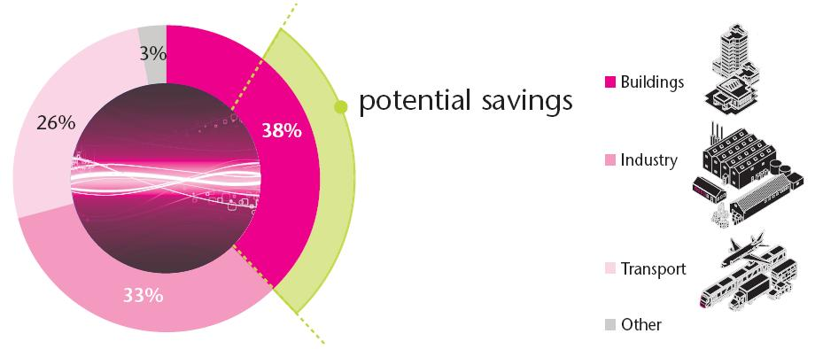
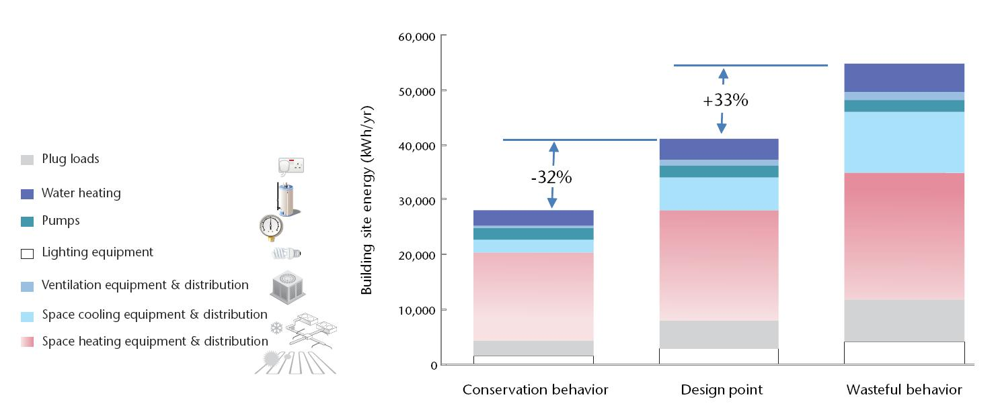
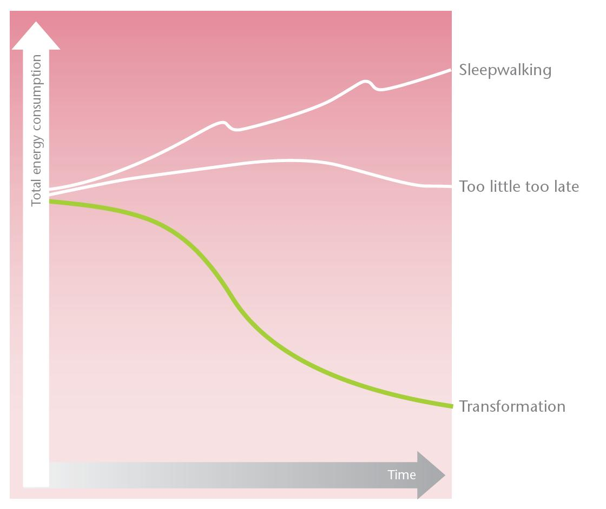
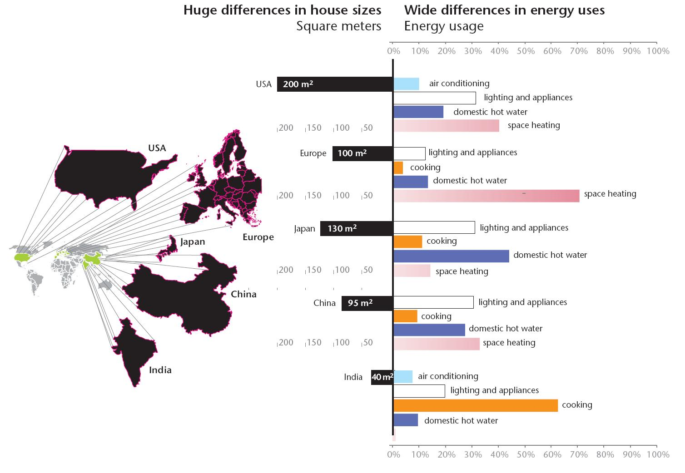

Le bâtiment pourrait participer à hauteur de 40% des économies d’énergie potentielles (Figure 1). Beaucoup d’énergie est gaspillée dans les bâtiments à cause d’une mauvaise conception, d’une technologie inadaptée ou de comportements non raisonnés. Les nouveaux bâtiments autant que les anciens peuvent devenir efficaces énergétiquement par une mise en place de mesures passives et actives lors de la conception et de l’utilisation. Utiliser les meilleures solutions peut diminuer d’environ 1/3 la consommation d’énergie.
Le nombre de nouvelles habitations à basse consommation énergétique existant dans de nombreux pays, même s’il est encore faible, montre que les objectifs énergétiques sont atteignables. Le comportement des usagers peut aussi faire la différence. Par exemple, le gaspillage peut augmenter de 1/3 la consommation en énergie d’un bâtiment alors qu’un comportement économe pourra réduire d’1/3 cette consommation (Figure 2).
Plusieurs scenarios permettent d’estimer la tendance future de consommation énergétique dans le secteur du bâtiment (Figure 3). Le scénario « Sleepwalking » prévoit de ne rien changer dans notre mode de consommation, sans aucune intention d’atteindre une efficience énergétique. Selon ce scénario, la consommation d’énergie est la plus élevée en 2050. Dans le scénario « Trop peu, trop tard », nous continuons la tendance actuelle de parler beaucoup mais d’agir peu. C'est-à-dire que la conscience du problème continue à croitre mais les actions sont ponctuelles plutôt que d’être coordonnées. Dans ce cas, le développement de bâtiments à faible consommation en énergie est trop lent et la consommation revient à son niveau actuel en 2020. « Transformation » est le seul scénario incluant une économie d’énergie nécessaire dans le secteur du bâtiment. Dans ce scénario, de nouvelles politiques énergétiques sont mises en place, de nouvelles approches et technologies de conceptions sont appliquées, de nouveaux comportements sont appris. Cela fait partie d’une action globale coordonnée. La conscience collective des priorités énergétiques change les comportements et accélère rapidement le développement de technologies et de pratiques plus efficaces énergétiquement.
La consommation énergétique d’un bâtiment est influencée par 3 facteurs : le nombre d’habitant, le nombre de m²/habitant et l’énergie par m². Ces facteurs sont visibles dans la formule : consommation énergétique = nb habitants X m²/habitant X kWh/m². Les éléments de cette équation varient selon plusieurs facteurs. Les plus importants sont les facteurs démographiques, sociaux et culturels, la conception des bâtiments et leurs équipements ainsi que le climat. Par exemple, une population vieillissante et des modes de vie irréguliers ont plus d’impact que des foyers d’une seule personne. Les facteurs sociaux influencent la taille des familles et donc la surface habitable et la consommation d’énergie par personne. Les facteurs culturels influencent le niveau de confort acceptable. La conception des bâtiments et le choix de leurs équipements déterminent les besoins en énergie. Le climat influence la demande en énergie, surtout pour le chauffage et la climatisation. En fonction de ces facteurs, la consommation d’énergie diffère largement à travers le monde (Figure 4).
Le chauffage des maisons est dominant en Europe alors qu’au Japon, le chauffage de l’eau est plus important. Dans l’Inde rurale, comme dans beaucoup d’autres pays en voie de développement où la majorité des personnes n’ont pas accès à l’électricité, le secteur dépensant le plus d’énergie est la préparation des repas, surtout en utilisant la biomasse. La richesse grandissante des pays développés conduira certainement à une plus forte consommation énergétique.